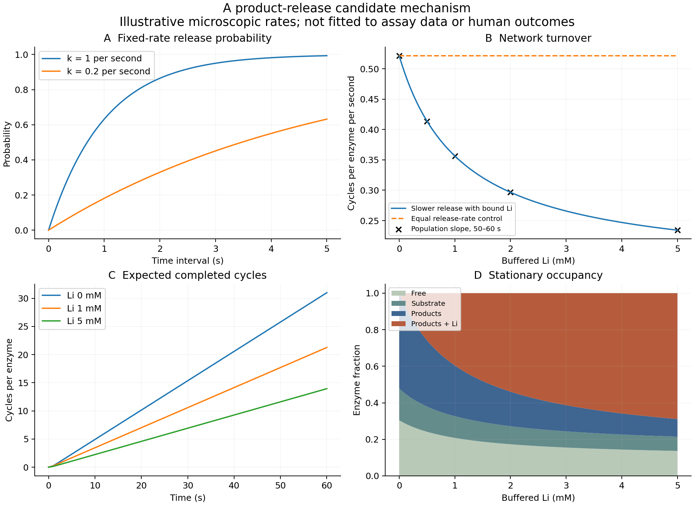

Virtual Cell / A biochemical milestone
What happens
between cycles?
An enzyme binds a substrate, transforms it, and releases products. Those are distinct events. Understanding their timing brings the model closer to a testable biochemical mechanism.
Originating framework and direction: Michael Emanuel Glover. Code, analysis and teaching developed with the assistant.
01 / The candidate mechanism
Stage and occupancy are separate.
The C++ class preserves our three stage names and a separate lithium-occupancy flag. Product release increments the completed-cycle count once. Lithium can leave while products remain attached.
This is a candidate buffered-assay mechanism. The positive lithium-bound product-release pathway explicitly returns lithium to the buffer too. Its microscopic rates and this joint-release pathway are illustrative assumptions, not fitted IMPase measurements.
02 / Rate becomes probability
A slower rate means a longer wait.
18.1%
Probability of release for an isolated, constant hazard. If lithium binds or unbinds during the interval, the full network must be solved.
p = 1 - exp(-rate * time) // Accurate even for small intervals: return -std::expm1(-k * dt_seconds);
Over one second, a rate of 1 per second gives a release probability of 63.2%. A rate of 0.2 per second gives 18.1%. Reading a probability does not execute a reaction.
03 / Two views of the same network
Individual events. Population dynamics.
The molecular simulation samples exact competing-event waiting times. The population implementation propagates the master equation and expected completed cycles. Both are checked against an independent analytical turnover calculation.

04 / The measured foundation
Empirical kinetics stays visible.
The accompanying analysis digitizes 30 markers from published recombinant bovine IMPase assays, compares seven conditional rate laws, and evaluates withheld measurements. The mixed-inhibition model predicts the withheld ribose/lithium series with an error about 2.1% of its mean measured rate.
Those are apparent assay constants. They do not uniquely determine this cycle’s microscopic transition rates. Matched transient product-release data are the next evidence needed to connect the two levels.
05 / Reproduce it
Seven C++ suites. Five Python checks.
cmake -S . -B build cmake --build build -j 2 ctest --test-dir build --output-on-failure ./build/enzyme_cycle_demo python3 experiments/enzyme-cycle/analyze.py python3 -m unittest discover -s experiments/impase -p 'test_*.py' -v
The C++ model requires C++17 and CMake. Plotting and empirical fitting use NumPy, SciPy and Matplotlib. Tests cover state transitions, cycle counts, probability bounds, population normalization, stationary flux, exact-event agreement, and numerical agreement across the empirical C++ and Python implementations.